Física do solo:
Agregação e estrutura do solo
Gustavo Frosi
Instituto Federal do Paraná
Curso Superior em Engenharia Agronômica
24 de agosto de 2026
Estrutura e agregação do solo
Estrutura e agregação do solo
O que é estrutura?
Estrutura do solo se refere ao arranjo das partículas e do espaço poroso entre elas, abrangendo a forma, o tamanho e a organização dos agregados ou unidades estruturais.
Estrutura é o arranjamento e a organização das partículas do solo - Hillel (1980).
Estrutura e agregação do solo
O que são os agregados?
Agregados ou unidades estruturais, são porções de solo nas quais as partículas estão dispostas obedecendo mais ou menos um padrão de organização.
Estrutura e agregação do solo
O que são os agregados?
Em um agregado, as partículas minerais (areia, silte e argila) e orgânicas e íons estão ligados entre si com mais força do que a força que existe entre as superfícies de agregados vizinhos em contato.
A interface que delimita os agregados é chamada de superfície de fraqueza.
Muitas vezes visíveis a olho nu.
- Fratura por contração (secamento do solo).
Estrutura e agregação do solo
Formato, tamanho e resistência:
- Granulometria;
- Composição química;
- Composição mineralógica;
- Atividade biológica do solo.
Gênese da estrutura do solo
Gênese da estrutura do solo
A formação dos agregados é um processo de união de partículas do solo (minerais e orgânicas).
Forças para aproximar as partículas;
Agentes ligantes (cimentantes) para estabilizar os agregados.
Processos: físicos, químicos e biológicos.
Há um agrupamento, uma hierarquia nos agregados.
Gênese da estrutura do solo
Agentes ligantes e cimentantes:
São responsáveis pela cimentação das partículas.
Mineral: íons, carbonatos, óxidos e aluminossilicatos;
Orgânicos: atividade biológica das raízes e dos organismos.
Classificação (tempo):
- Transientes;
- Temporários;
- Persistentes.
Gênese da estrutura do solo
Agentes ligantes e cimentantes:
Gênese da estrutura do solo
Agentes ligantes e cimentantes:
- Transientes: materiais orgânicos frescos com decomposição muito rápida;
- Associados à formação de agregados grandes e estáveis (\(250~\mathrm{\mu m}\) de diâmetro);
- Temporários: raízes, hifas dos fungos e bioprodutos microbianos;
- Raízes laterais finas atuam na união de microagregados por meio dos pelos radiculares e por exsudatos;
- Efeitos podem durar meses e até anos.
Gênese da estrutura do solo
Agentes ligantes e cimentantes:
- Persistentes: alta estabilidade dos microagregados;
- Polímeros fortemente adsorvidos (complexo organomineral);
- Ácidos húmicos e fúlvicos associados com ferro amorfo;
- Alumínio e aluminossilicatos.
Gênese da estrutura do solo
Processos químicos:
- Interação de argilas, óxidos, moléculas orgânicas e íons.
- Floculação, expansão e contração do solo e ciclos de secagem e umedecimento (Aproximação de partículas).
Gênese da estrutura do solo
Floculação da argila:
Gênese da estrutura do solo
Ponte entre argila e cátions:
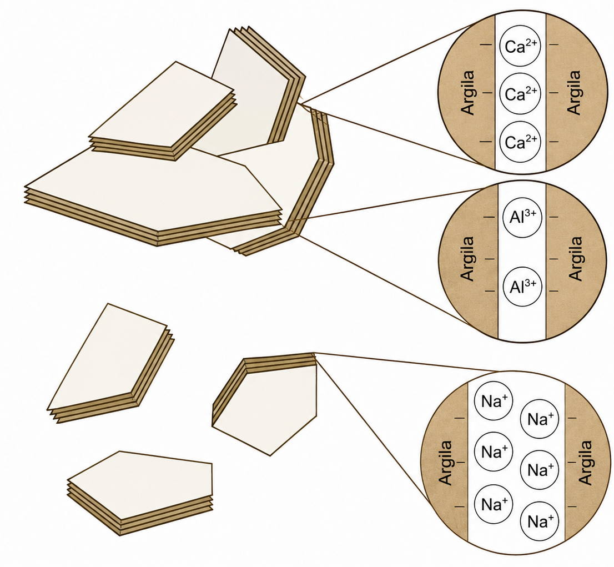
Gênese da estrutura do solo
Ponte entre argila e cátions polivalentes:
Gênese da estrutura do solo
Processos físicos:
- Abióticos e/ou biológicos;
- Ciclos de umedecimento e secagem (altera o volume);
- Contração do solo;
- Expansão do solo;
- Fissuras em solos expansivos nos planos de fraqueza.
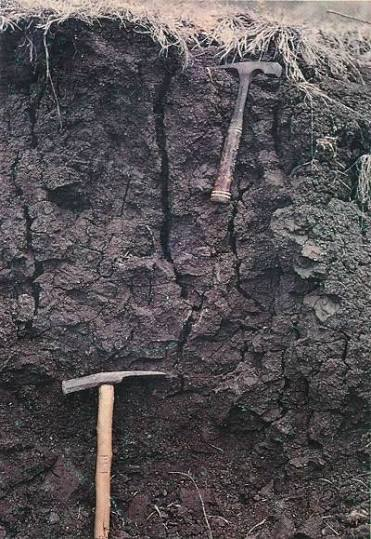
Gênese da estrutura do solo
Processos biológicos:
- Atividade dos microrganismos, da fauna e das plantas;
- Aproximação e união de partículas minerais por compostos orgânicos produzidos por microrganismos;
Gênese da estrutura do solo
Processos biológicos:
- Bactérias: gomas, polissacarídeos;
- Compostos “pegajosos” que unem os agregados;
- Fungos: hifas;
- Estabilizam os agregados;
- Minhocas, formigas e cupins: criam galerias e deslocam partículas do solo;
- Fragmentam agregados em unidades menores (poros).
Gênese da estrutura do solo
Processos biológicos:
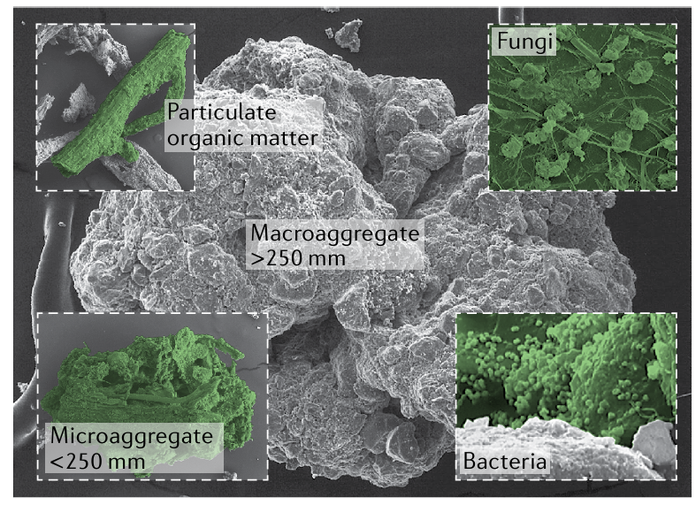
Organização hierárquica dos agregados
Organização hierárquica dos agregados
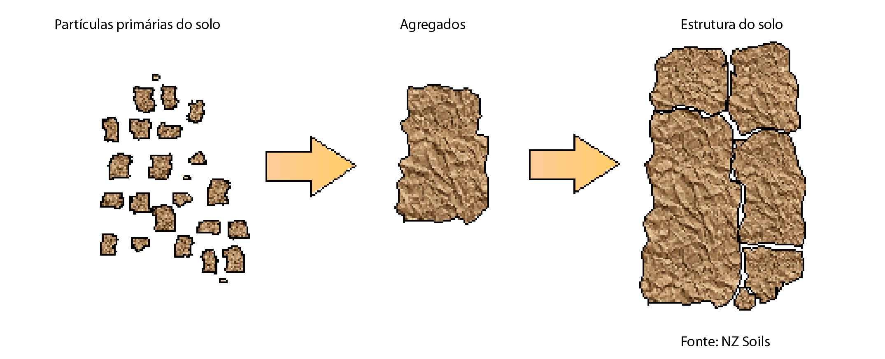
Organização hierárquica dos agregados
Classificação:
- Microagregados: menores que 0,25 mm;
- Macroagregados: maiores que 0,25 mm.
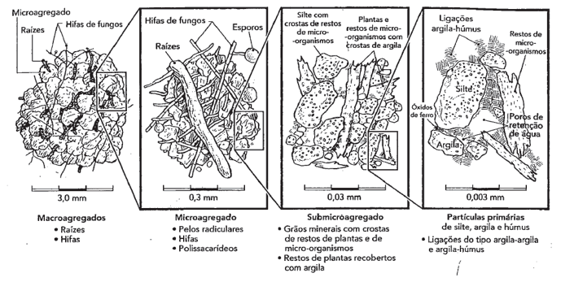
Organização hierárquica dos agregados
Classificação:
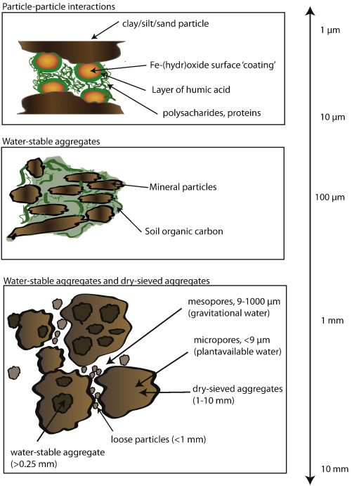
Organização hierárquica dos agregados
Classificação:
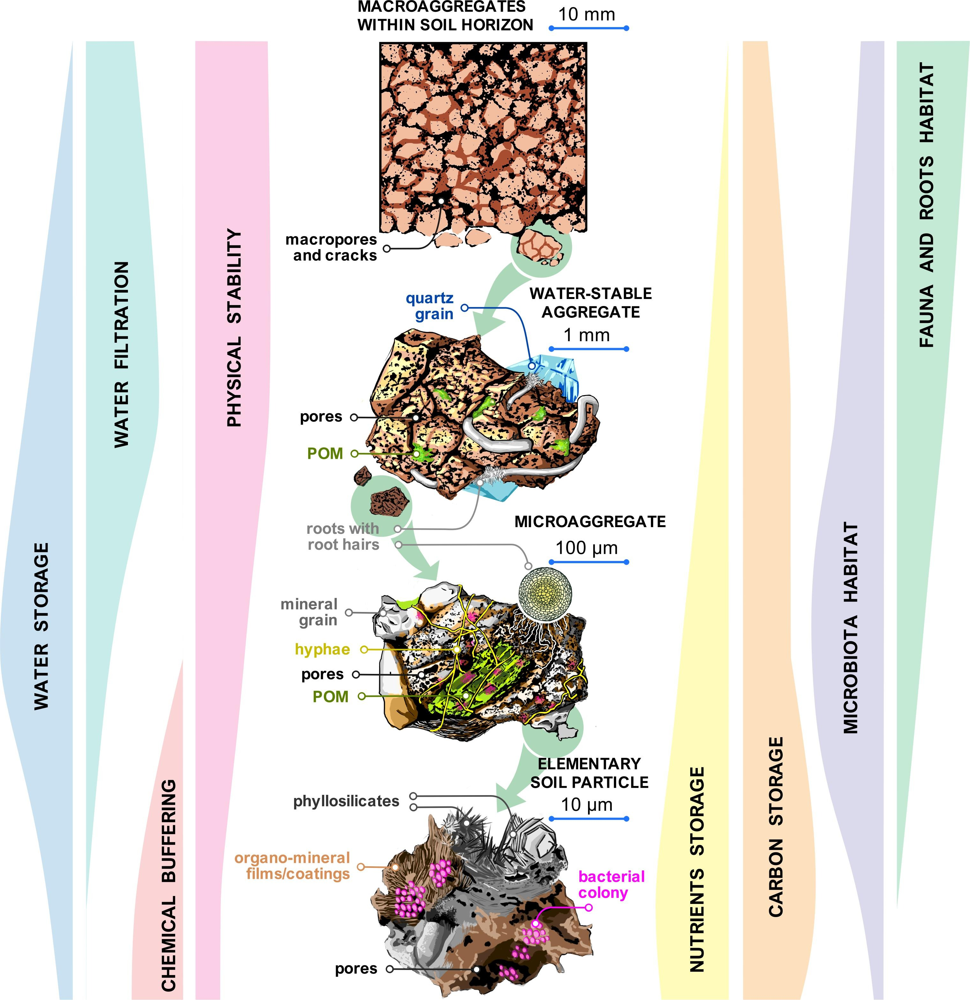
Abordagens para avaliar a estrutura
Importante para avaliar o efeito da gênese e das práticas de uso e manejo do solo na agregação.
Métodos qualitativos e quantitativos
Abordagem pedológica, mecânica e ecológica.
Abordagens para avaliar a estrutura
Abordagem pedológica:
A estrutura é avaliada qualitativamente pelo formato, tamanho e grau de desenvolvimento.
- Os agregados são separados por planos de fraqueza;
- Retira-se um bloco e se separam as unidades por meio da aplicação de força de tração;
Abordagens para avaliar a estrutura
Abordagem pedológica:
Classificação dos formatos
- Grãos (granular);
- Lâminas (laminar);
- Cubos (blocos);
- Colunas (colunar);
- Prismas (prismática);
Obs: Na maior parte dos solos temos um tipo granular e blocos subangulares.
Abordagens para avaliar a estrutura
Abordagem pedológica:
Classificação dos formatos
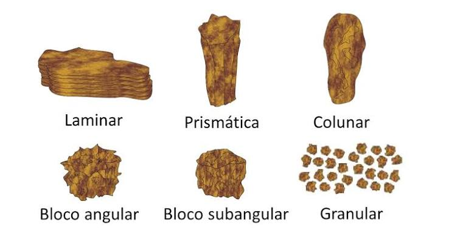
Abordagens para avaliar a estrutura
Abordagem pedológica:
Classificação dos tamanhos das unidades
| Classe de tamanho | Laminar (mm) | Prismática e colunar (mm) | Blocos angulares e subangulares (mm) | Granular (mm) |
|---|---|---|---|---|
| Muito pequena | < 1 | < 10 | < 5 | < 1 |
| Pequena | 1 a 2 | 10 a 20 | 5 a 10 | 1 a 2 |
| Média | 2 a 5 | 20 a 50 | 10 a 20 | 2 a 5 |
| Grande | 5 a 10 | 50 a 100 | 20 a 50 | 5 a 10 |
| Muito grande | > 10 | > 100 | > 50 | > 10 |
Abordagens para avaliar a estrutura
Abordagem pedológica:
Classificação do grau de desenvolvimento da estrutura
Representa a coesão de dentro e de fora dos agregados (força de cimentação e de estabilização).
3 categorias: grãos simples, maciça e agregada
Abordagens para avaliar a estrutura
Abordagem pedológica:
Classificação do grau de desenvolvimento da estrutura
- Grãos simples: Solos arenosos;
- Maciça: Solos hidromórficos ou solos com alta compactação;
- Agregada: Mais adequada para desenvolvimento de plantas;
- Fraco: Unidades estruturais pouco frequentes em relação ao solo que não está agregado;
- Moderada: Unidades estruturais em quantidade semelhante ao solo não agregado;
- Forte: Unidades estruturais de fácil separação e maior quantidade em relação ao solo não agregado.
Abordagens para avaliar a estrutura
Abordagem ecológica ou edafológica:
Considera a estrutura quanto à forma, ao tamanho e à resistência de agregados do solo.
Também leva em conta a funcionalidade da estrutura
- Reter e transmitir fluidos e materiais;
- Suporte ao crescimento de raízes.
Abordagens para avaliar a estrutura
Abordagem ecológica ou edafológica:
Baseada em 3 aspectos
- Graus de agregação: distribuição por tamanho e estabilidade;
- Porosidade: tamanho, forma, tortuosidade, continuidade e estabilidade de poros;
- Alteração espacial e temporal em agregados e poros em relação a fatores naturais e antropogênicos.
Avaliação da estrutura métodos
Avaliação da estrutura
Métodos:
Avaliação da estrutura
Campo:
Qualitativos (perfil cultural)
Observação da organização e da morfologia das estruturas no perfil. Delimitação de porções em profundidade e lateralmente com base em critérios de forma, tamanho, dureza e distribuição dos agregados. Presença ou ausência de poros visíveis a olho nu e continuidade.
Avaliação da estrutura
Campo:
VESS - Visual Evaluation of Soil Structure
Rápido e de baixo custo para qualificar a camada superficial em condições de campo.
- Extração de uma fatia de solo com 25 cm de profundidade, 10 cm de espessura e 20 cm de largura;
- Fragmentação manual dos agregados em seus limites naturais ou pontos de fraqueza;
Avaliação da estrutura
Campo:
VESS - Visual Evaluation of Soil Structure
- Tamanho, estabilidade e a porosidade dos agregados e raízes;
- Comparação com uma chave visual (5 níveis de qualidade);
- 1 estrutura boa e 5 estrutura pobre.
- Calculada uma nota ou índice de qualidade para a estrutura do solo.
Adequado para monitorar e prever futuras melhorias ou ações de readequação de manejos adotados na área agrícola.
Avaliação da estrutura
Campo:
DRES - Diagnóstico Rápido da Estrutura do Solo (Feito no Brasil!)
- Coleta de fatia de solo: 10 cm de espessura, 20 cm de largura e até 25 cm de profundidade;
- Alocação em bandeja.
- Manipulação do solo para se observar a forma e o tamanho dos agregados;
- Presença ou não de feições de compactação;
- Forma e orientação das fissuras;
- Rugosidade das faces de ruptura;
- Resistência à ruptura;
- Distribuição e o aspecto do sistema radicular;
- Atividade biológica.
Avaliação da estrutura
Campo:
DRES - Diagnóstico Rápido da Estrutura do Solo (Feito no Brasil!)
Pontos de 1 até 6
- 1 é indicativo de solo degradado;
- 6 indicativo de melhor condição estrutural;
Avaliação da estrutura métodos
Laboratório:
- Peneiramento seco: determina a quantidade de agregados estáveis;
- Peneiramento úmido: simula a quantidade de agregados estáveis após serem submetidos à energia disruptiva (água);
Avaliação da estrutura métodos
Laboratório:
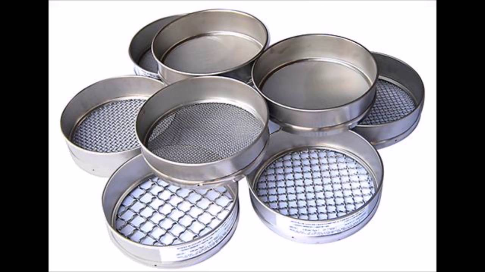
Avaliação da estrutura métodos
Laboratório:
\[AGR_{c1} = \frac{mag_1}{mag_t}*100\]
\(AGR_{c1}=percentual~de~agregados~estáveis~na~classe~1\)
\(mag_1= massa~de~agregados~retido~na~c1\)
\(mag_t=massa~de~agregados~em~todas~as~classes\)
Avaliação da estrutura métodos
Laboratório:
\[DMP = \sum^n_{i=1} \frac{Dm_i*mag_i}{mag_t}\] \(DMP=Diâmetro~médio~ponderado\)
\(Dm_i=diâmetro~médio~da~classe_i\)
Melhoria da estrutura
Melhoria da estrutura
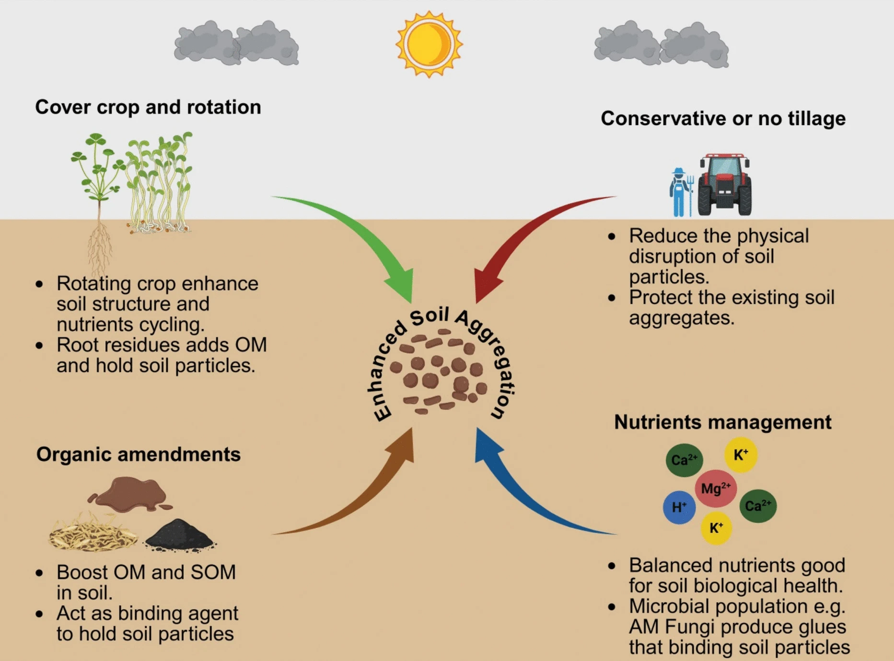
Melhoria da estrutura
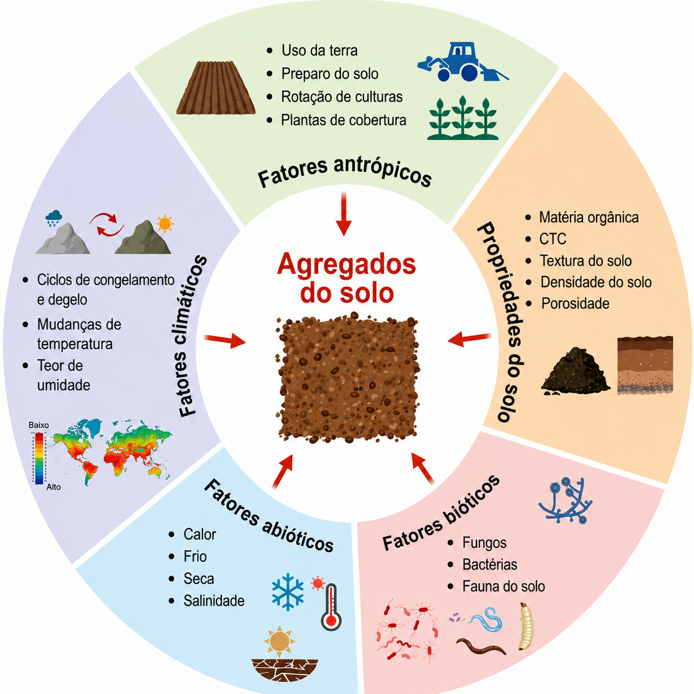
Fim!